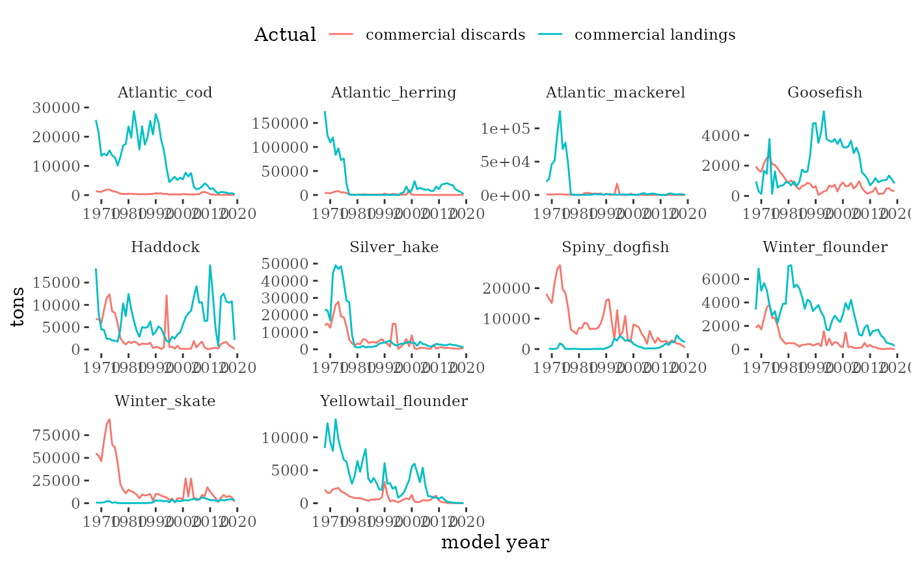

Georges Bank Survey Biomass and Catch Data
Source:vignettes/GBsurveycatchviz.Rmd
GBsurveycatchviz.RmdAll models use a fishery independent index of biomass and a catch time series. This document visualizes these basic assessment inputs.
Fishery independent survey indices
The NEFSC spring and fall bottom trawl surveys collect the information required to obtain estimates of survey biomass and abundance. R package survdat was used to pull and compile the survey data time series. NEFSC bottom-trawl sampling encompasses about 293,000 square km of continental shelf from Cape Hatteras, NC, to Nova Scotia, Canada in depths from 8-400 m.
Multiple survey datasets are provided in the mskeyrun package; all were created using create_survey_index() in ms-keyrun/data-raw. Datasets for the 10 Georges Bank focal species are mskeyrun::surveyIndex (all survey years 1968-2019 converted to survey vessel R/V Albatross units for years surveyed by R/V Henry Bigelow 2009-2019), and unconverted separate indices for Albatross years (mskeyrun::surveyIndexA4) and Bigelow years (mskeyrun::surveyIndexHB). Datasets for food web modeling include all surveyed species for combined and separate surveys. These datasets have the same names with the suffix -All appended (e.g. mskeyrun::surveyIndexAll)
Here we visualize survey indices from the mskeyrun::surveyIndex dataset.
modyears <- 1968:2019 # 1968 agreed for project, testing with shorter dataset
focalspp <- mskeyrun::focalSpecies %>%
dplyr::filter(modelName != "Pollock") %>% # not using in these models
dplyr::mutate(Name = modelName)
# single index, use if fitting to two not working
survindex.all <- mskeyrun::surveyIndex %>%
dplyr::filter(YEAR %in% modyears) %>%
dplyr::left_join(focalspp %>% dplyr::select(-NESPP3) %>% dplyr::distinct()) %>%
dplyr::filter(!is.na(modelName)) %>%
dplyr::mutate(ModSim = "Actual",
year = YEAR,
Code = SPECIES_ITIS,
Name = modelName,
survey = paste0("Combined ", SEASON)) %>%
dplyr::select(ModSim, year, Code, Name, survey, variable, value, units)
towarea <- 0.0384
GBsurvstrata <- c(1090, 1130:1210, 1230, 1250, 3460, 3480, 3490, 3520:3550)
GBarea <- 55055.24 #FishStatsUtils::northwest_atlantic_grid %>%
#dplyr::filter(stratum_number %in% GBsurvstrata) %>%
#dplyr::summarise(area = sum(Area_in_survey_km2)) %>%
#as.double()
survbio <- survindex.all %>%
dplyr::filter(variable %in% c("strat.biomass", "biomass.var")) %>%
dplyr::select(-units) %>%
tidyr::pivot_wider(names_from = "variable", values_from = "value") %>%
dplyr::mutate(cv = sqrt(biomass.var)/strat.biomass) %>%
dplyr::select(-biomass.var) %>%
# expand: area of tow = 0.0384 and GB area = above and kg to tons
dplyr::mutate(biomass = strat.biomass * (GBarea/towarea) /1000) %>%
tidyr::pivot_longer(c(biomass, cv), names_to = "variable", values_to = "value") %>%
dplyr::mutate(units = ifelse(variable=="biomass", "tons", "unitless"))
# plot biomass time series facet wrapped by species
plotB <- function(dat, truedat=NULL){
svbio <- dat %>% filter(variable=="biomass")
svcv <- dat %>% filter(variable=="cv")
ggplot() +
geom_line(data=svbio, aes(x=year,y=value, color="Survey Biomass"),
alpha = 10/10) +
{if(!is.null(truedat)) geom_line(data=truedat, aes(x=time/365,y=atoutput, color="True B"), alpha = 3/10)} +
theme_tufte() +
theme(legend.position = "top") +
xlab("model year") +
ylab("tons") +
labs(colour=dat$ModSim) +
facet_wrap(~Name, scales="free")
}Fishery dependent catch
Commercial landings and discards information is compiled with the R package comlandr.
Landings are proportioned from fishery statistical areas to Georges Bank using the proportion of landings within and outside Georges Bank from high resolution fishery data (see Allocate landings to EPU).
Discard rates (discarded/kept weight) are estimated from fishery observer data for each species and gear for years with observer information. Prior years discard rates are based on the average across years with observer information for each species and gear. The annual discard rate is multiplied by the Georges Bank landings time series to estimate the discards time series.
Discard mortality rates have not yet been applied
fleetdef <- focalspp %>%
dplyr::select(-NESPP3) %>%
dplyr::distinct() %>%
dplyr::mutate(species = Name) %>%
dplyr::arrange(species) %>%
dplyr::mutate(pelagic = dplyr::case_when(species %in% c("Atlantic_herring",
"Atlantic_mackerel") ~ 2,
TRUE ~ 0),
demersal = dplyr::case_when(!species %in% c("Atlantic_herring",
"Atlantic_mackerel") ~ 1,
TRUE ~ 0),
qind = pelagic + demersal,
pelagic = pelagic/2) %>%
dplyr::select(species, demersal, pelagic, qind)
# need to have landings + discards = catch
fishindex <- mskeyrun::catchIndex %>%
dplyr::filter(YEAR %in% modyears) %>%
dplyr::left_join(focalspp %>% dplyr::mutate(NESPP3 = as.integer(NESPP3))) %>%
dplyr::filter(!is.na(Name)) %>%
dplyr::select(-units) %>%
tidyr::pivot_wider(names_from = "variable", values_from = "value") %>%
dplyr::group_by(YEAR, Name) %>%
dplyr::mutate(catch = sum(`commercial landings`,`commercial discards`, na.rm = TRUE),
cv = 0.05) %>%
dplyr::ungroup() %>%
tidyr::pivot_longer(c(`commercial landings`, `commercial discards`, catch, cv), names_to = "variable", values_to = "value") %>%
dplyr::mutate(units = ifelse(variable=="cv", "unitless", "metric tons")) %>%
dplyr::left_join(fleetdef, by=c("Name" = "species")) %>%
dplyr::mutate(ModSim = "Actual",
year = YEAR,
Code = SPECIES_ITIS,
Name = modelName,
fishery = qind) %>%
dplyr::select(ModSim, year, Code, Name, fishery, variable, value, units)
# make a catch series function that can be split by fleet? this doesnt
# also note different time (days) from model timestep in all other output
plotC <- function(dat, truedat=NULL){
ctbio <- dat %>% filter(variable=="catch")
ctcv <- dat %>% filter(variable=="cv")
landdisc <- dat %>% filter(variable %in% c("commercial landings", "commercial discards"))
ggplot() +
geom_line(data=landdisc, aes(x=year,y=value, colour=variable),
alpha = 10/10) +
{if(!is.null(truedat)) geom_line(data=truedat, aes(x=time/365,y=atoutput, color="True Catch"), alpha = 3/10)} +
theme_tufte() +
theme(legend.position = "top") +
xlab("model year") +
ylab("tons") +
labs(colour=dat$ModSim) +
facet_wrap(~Name, scales="free")
}
plotC(fishindex)